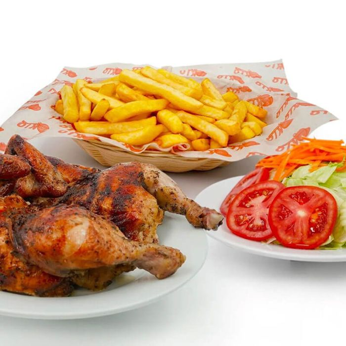

Home
Pollo con papas fritas

Descripción
Pollo con papas fritas es una combinación clásica y
popular queconsiste en pollo frito, tamaños en
trozos o filetes, acompañado de papas fritas crujientes,
a menudo bañadas en sal o acompañadas de salsas
Ingredientes
- 5 Unidades Papas Grandes lavadas y peladas
- 4 Presas De Pollo preferiblemente patas o muslos
- 2 Tazas Aceite Vegetal Girasol para freír
- 1 Taza Harina De Trigo
- 1 Unidad Huevo
- 1 Sobre Caldo Criollita MAGGI
- 1 Taza Miga De Pan
- 5 Cucharadas Mayonesa MAGGI
- 8 Cucharadas Salsa De Tomate MAGGI